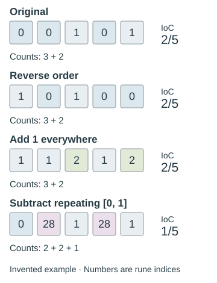

What cipher operations preserve
Compare rearrangements, fixed substitutions, and position-dependent shifts before choosing a measurement.
On this page
An invariant is something an operation leaves unchanged. In cipher analysis, invariants help you check an implementation and avoid tests that cannot distinguish the candidates you are comparing. If every rearrangement of the same runes has the same whole-stream index of coincidence, selecting the rearrangement with the “best IoC” cannot work.
First fix what counts as a symbol
For the examples here, one symbol is one of the 29 runes, represented by its zero-based index. A label such as TH or NG still represents one rune. Keep the same input boundaries throughout a comparison: removing a heading or dropping punctuation is a preprocessing decision, not part of the substitution or rearrangement itself. See rune indices and prime values and transcription layers.
What each operation preserves
| Measurement | Pure transposition | Fixed one-to-one substitution | Position-dependent shifts |
|---|---|---|---|
| Number of symbols | Preserved | Preserved | Preserved |
| Count of each named rune | Preserved | Not generally preserved | Not generally preserved |
| Counts sorted without rune names | Preserved | Preserved | Not guaranteed |
| Whole-stream IoC | Preserved | Preserved | Not guaranteed |
| Sum of fixed rune prime values | Preserved | Not generally preserved | Not generally preserved |
| Which positions contain equal symbols | Not generally preserved | Preserved | Not guaranteed |
“Not guaranteed” does not mean “must change.” A particular input can happen to give the same result. A fixed one-to-one substitution uses the same reversible alphabet mapping at every position; ordinary Atbash and a uniform shift are examples. A repeating Vigenère key can instead apply different shifts to different positions.
A five-rune example
Start with F F U F U, or indices 0 0 1 0 1. It has three F runes and two U runes. Its matching-pair numerator is 3 × 2 + 2 × 1 = 8; dividing by 5 × 4 = 20 gives IoC 2/5.

| Operation | Output indices | IoC | What happened |
|---|---|---|---|
| Reverse the sequence | 1 0 1 0 0 | 2/5 | The same runes occupy different positions. |
| Add 1 to every index | 1 1 2 1 2 | 2/5 | Three F become three U; two U become two TH. |
| Subtract the repeating key [0, 1] | 0 28 1 28 1 | 1/5 | The counts become 1, 2, and 2 across three runes. |
The uniform shift preserves the pattern of repetitions even though it changes the rune names. The first, second, and fourth symbols are still equal. Their prime values are different, however: the original prime sum is 3 × 2 + 2 × 3 = 12, while the uniformly shifted sum is 3 × 3 + 2 × 5 = 19. IoC and a Gematria Primus sum measure different properties.
Why IoC survives alphabet relabeling
The IoC formula uses the counts, not the names attached to them. A reversible substitution merely moves those counts to different alphabet entries. Its numerator and denominator therefore stay the same. A transposition keeps each named count unchanged, so it preserves IoC for an even simpler reason.
This also holds for any statistic calculated only from the multiset of counts, such as empirical symbol entropy. It does not hold for a score that compares named rune frequencies against a particular expected distribution: that score depends on which count belongs to which rune. Nor does it automatically hold for measurements made on selected positions or separate columns, because a rearrangement can move runes across those boundaries.
Reproduce the example
Run this with Python 3. It uses exact fractions and the standard library; no data files, network, or AI calls are needed.
from collections import Counter
from fractions import Fraction
def ioc(symbols):
n = len(symbols)
if n < 2:
return None
counts = Counter(symbols)
return Fraction(sum(v * (v - 1) for v in counts.values()), n * (n - 1))
source = [0, 0, 1, 0, 1]
reversed_order = source[::-1]
uniform_shift = [(c + 1) % 29 for c in source]
key = [0, 1]
varying_shift = [(c - key[i % len(key)]) % 29 for i, c in enumerate(source)]
for name, symbols in [
("original", source),
("reversed", reversed_order),
("uniform", uniform_shift),
("varying", varying_shift),
]:
print(name, symbols, ioc(symbols))
assert Counter(source) == Counter(reversed_order)
assert sorted(Counter(source).values()) == sorted(Counter(uniform_shift).values())
assert ioc(source) == ioc(reversed_order) == ioc(uniform_shift) == Fraction(2, 5)
assert ioc(varying_shift) == Fraction(1, 5)Choose a test that can change
For a transposition search, length and rune counts are integrity checks. To compare candidate orders, examine something sensitive to order, such as repeated neighboring pairs, the distribution within specified columns, or a fully stated language score. A promising score still needs controls for how many arrangements were tried.
For fixed alphabet substitutions, global IoC cannot select the correct mapping. Rune identities and repeated-word patterns can carry information that this single number discards. For position-dependent ciphers, a change in IoC is possible but is not a proof that a key is correct. The IoC guide explains whole-stream versus column measurements; the reproduction guide explains how to record the search scope.
This matters when counting a search space: enumerating 58 shifts and orders does not give 58 different whole-stream IoC scores. Before running a large search, use a small example to check whether your chosen measurement can respond to the parameter you are changing.
What these checks establish
These are mathematical properties of the operations as defined here, illustrated with an artificial sequence. They are not newly completed experiments on an unsolved page. A proposed transposition that changes the rune counts has done something besides rearranging the fixed input; a proposal that preserves them has passed an integrity check, not proved a solution.
For a manuscript example, compare the Warning’s archived and Atbash-decoded sums: both contain 184 runes, but their prime-value totals differ.
Guides linking here
- Start solving: a practical introduction
- Documenting a reproducible attempt
- Transposition ciphers
- Reproducing rune prime sums
- Statistics and measurements
- Index of coincidence: a reproducible rune baseline
- Rune-frequency entropy: balance without order
- Repeated rune sequences: bigrams and trigrams
- Comparing patterns with chance: null models and selection
- Rune matches at a distance: lag coincidences